Name: Heveen Almouhamad
In this lab I created a local Git repository, linked it to GitHub, pushed my work online, and deployed a simple website using GitHub Pages.
1) Folder structure: I created the project folder and a pictures folder for screenshots.
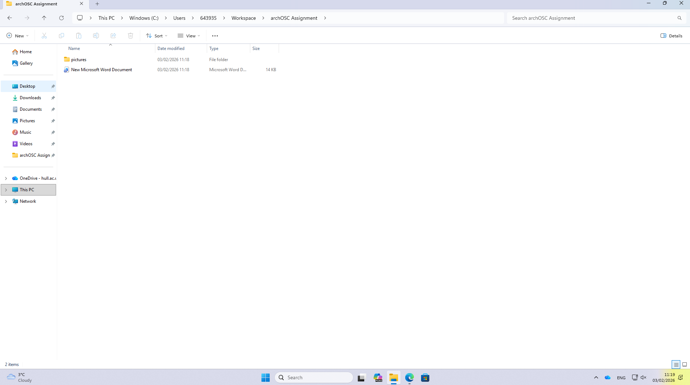
2) Git init: I initialised a local repository using git init.
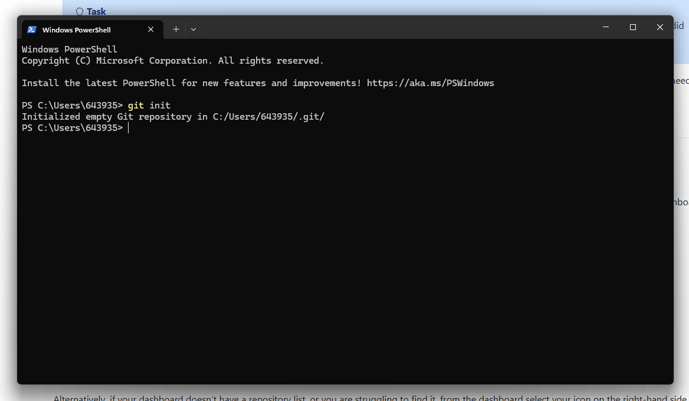
3) Remote + pull: I added the GitHub repository as a remote and pulled the initial content.
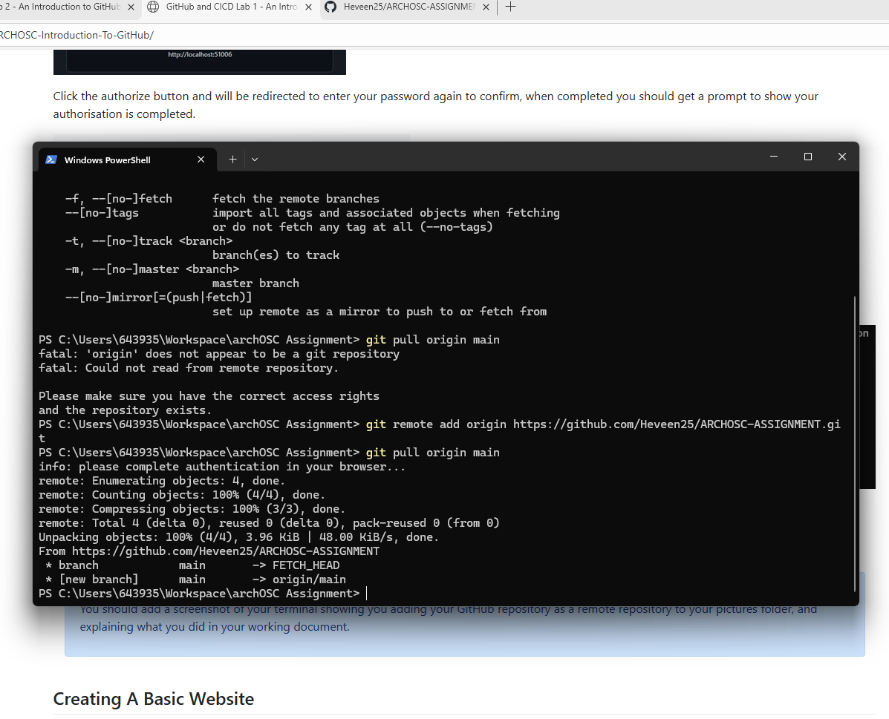
4) Local website (before changes): I opened the webpage locally in the browser to check it worked.
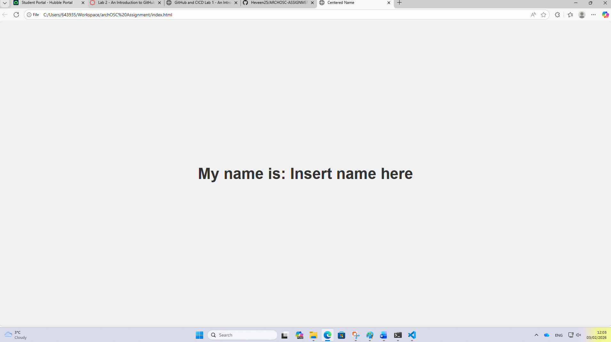
5) Git status + commit: I staged files and created a commit to save my work in Git.
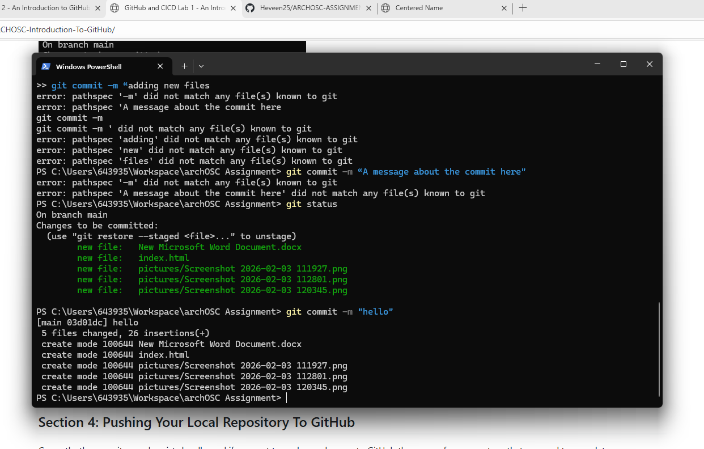
6) GitHub repo updated (username visible): I checked the repository online to confirm the files were uploaded.
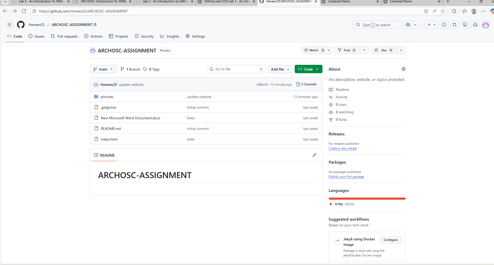
7) Editing index.html: I edited the HTML file in Visual Studio Code.
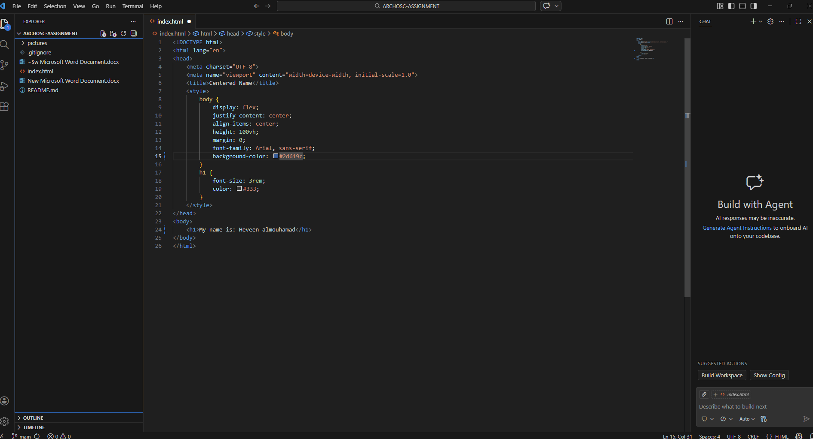
8) Commit + push from VS Code: I committed and pushed the updated website to GitHub.
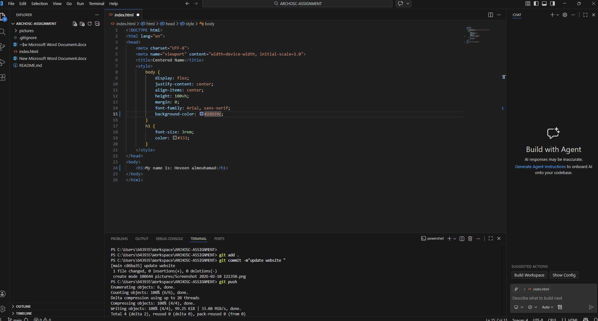
9) Updated website changes: I improved the website by adding my name and changing the background colour.
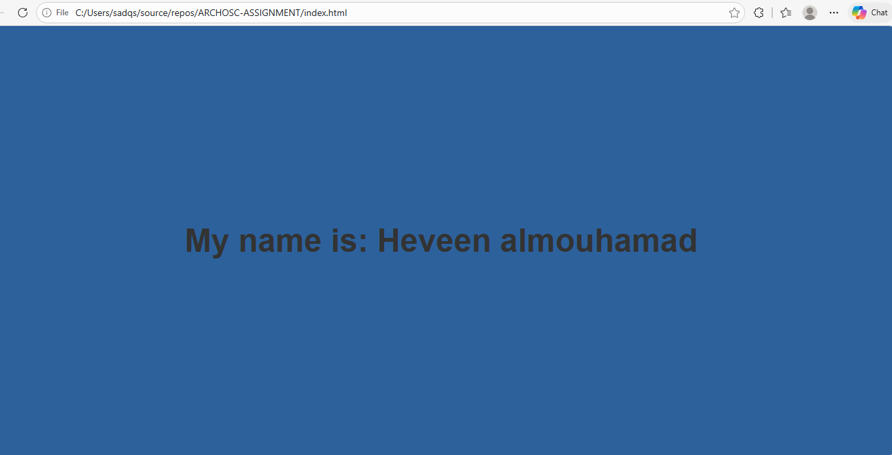
10) GitHub Pages deployments link: I accessed the live site using the GitHub Pages deployment link.
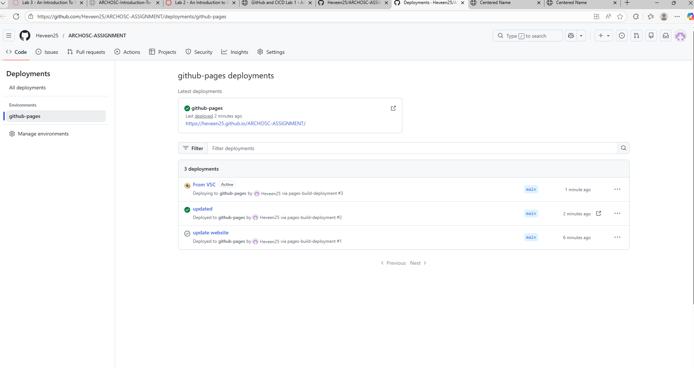
11) Clean working tree: After pushing, I checked that there were no uncommitted changes.
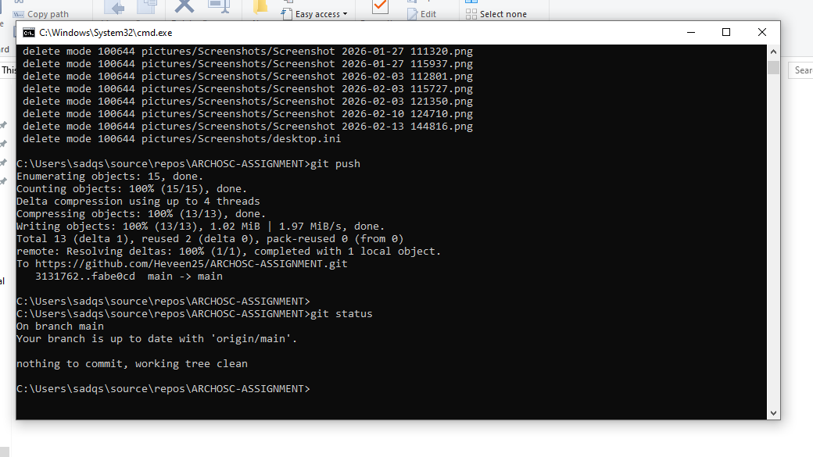
12) Word working document pushed: I committed and pushed my updated working document.
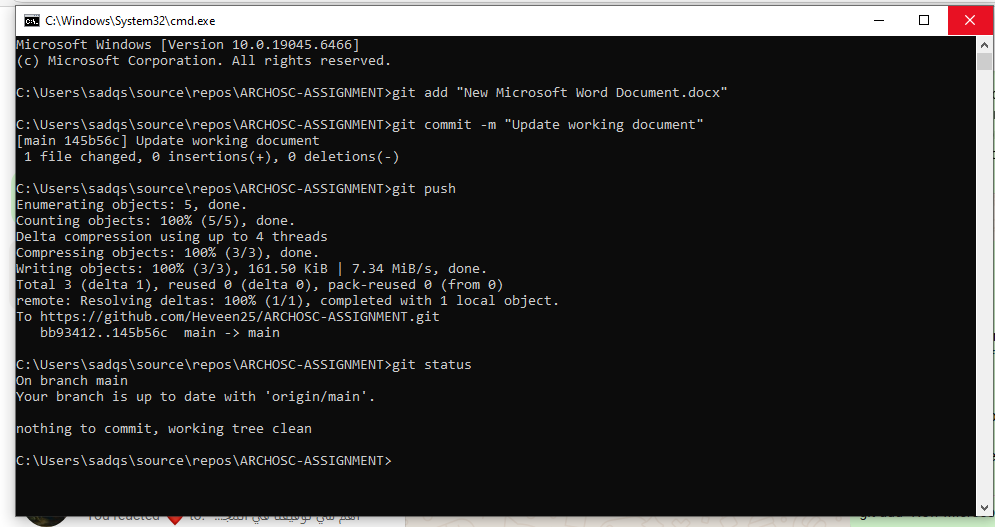
Today I learned the basic Git workflow (add, commit, push) and how GitHub stores projects online. I also learned how GitHub Pages can deploy a website from a repository. In industry, this is useful because teams can collaborate, track changes, and publish updates quickly.